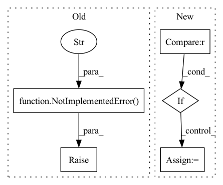

Pattern ID :1655
Before Change
Returns:
output (batch_size, 1, T)
raise NotImplementedError("Implement forward." )
@property
def num_parameters(self):
_num_parameters = 0After Change
estimated_sources: (batch_size, num_blocks * num_layers, 1, T) if stack_dim=1.
sorted_speaker_vector: (batch_size, n_sources, latent_dim, T)
if sorted_idx is None :
sorted_idx = self.solve_permutation(mixture, spk_idx=spk_idx)
return sorted_idx // (batch_size, T, n_sources)
estimated_sources, sorted_spk_vector = self.extract_latent(mixture, sorted_idx, return_all_layers=return_all_layers, stack_dim=stack_dim)
if return_spk_vector:
return estimated_sources, sorted_spk_vectorIn pattern: SUPERPATTERN
Frequency: 3
Non-data size: 5
Instances Fragment ID: 6665749
Project Name: tky823/dnn-based_source_separation
Commit Name: bceeacb692d2f21773f3f8ad7921d5ff890a1403
Time: 2021-11-05
Author: delta9guitar97@gmail.com
File Name: src/models/wavesplit.py
M Class Name: WaveSplitBase
N Class Name: WaveSplitBase
M Method Name: forward(7)
N Method Name: forward(3)
M Parent Class: nn.Module
N Parent Class: nn.Module
M File Name: src/models/wavesplit.py
N File Name: src/models/wavesplit.py
M Start Line: 45
M End Line: 52
N Start Line: 28
N End Line: 48
Before Change
and F the number of output channels (= `num_output_channels`)
if attn_mask is not None:
raise NotImplementedError("attention masks not supported yet" )
q = self.q_proj(x_q)
k = self.k_proj(x_kv)
v = self.v_proj(x_kv)After Change
q, k, v = (rearrange(x, "b n (h c) -> b h n c", h=self.num_heads) for x in [q, k, v])
q = q * self.dp_scale
if rot_pos_emb_q is not None :
q = rot_pos_emb_q.rotate(q)
if rot_pos_emb_k is not None:
k = rot_pos_emb_k.rotate(k) Fragment ID: 6665745
Project Name: krasserm/perceiver-io
Commit Name: c2b9af32775fd28f693dd1b572142935efd31b99
Time: 2022-09-25
Author: krasserm@googlemail.com
File Name: perceiver/model/core/modules.py
M Class Name: MultiHeadAttention
N Class Name: MultiHeadAttention
M Method Name: forward(6)
N Method Name: forward(5)
M Parent Class: nn.Module
N Parent Class: nn.Module
M File Name: perceiver/model/core/modules.py
N File Name: perceiver/model/core/modules.py
M Start Line: 64
M End Line: 93
N Start Line: 75
N End Line: 120
Before Change
raise NotImplementedError("Implement D3Net")
def forward(self, input):
raise NotImplementedError("Implement D3Net" )
class D3Block(nn.Module):
def __init__(self, in_channels, out_channels, kernel_size, num_blocks=3, depth=None, eps=EPS):
super().__init__()After Change
stacked.append(input)
for idx in range(self.num_d3blocks):
if idx != 0 :
x = torch.cat(stacked, dim=1)
x = self.net[idx](x)
stacked.append(x)
Fragment ID: 6665746
Project Name: tky823/dnn-based_source_separation
Commit Name: 08ed4eac522e740d5bb22e99fb4f60bd3f8aadf1
Time: 2021-03-12
Author: 40362510+tky823@users.noreply.github.com
File Name: src/models/d3net.py
M Class Name: D3Net
N Class Name: D3Net
M Method Name: forward(2)
N Method Name: forward(2)
M Parent Class: nn.Module
N Parent Class: nn.Module
M File Name: src/models/d3net.py
N File Name: src/models/d3net.py
M Start Line: 24
M End Line: 24
N Start Line: 59
N End Line: 72